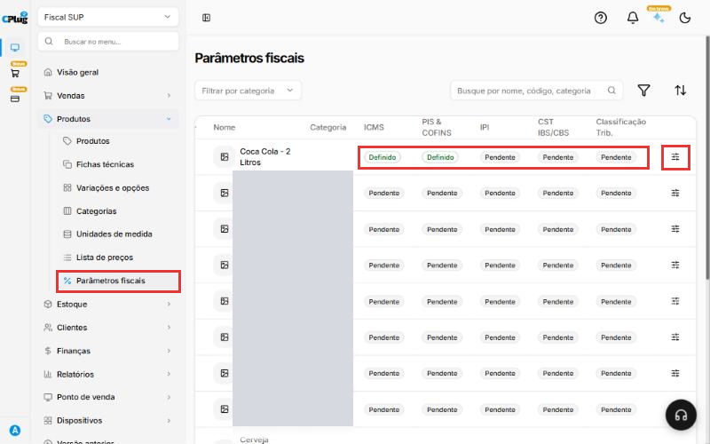
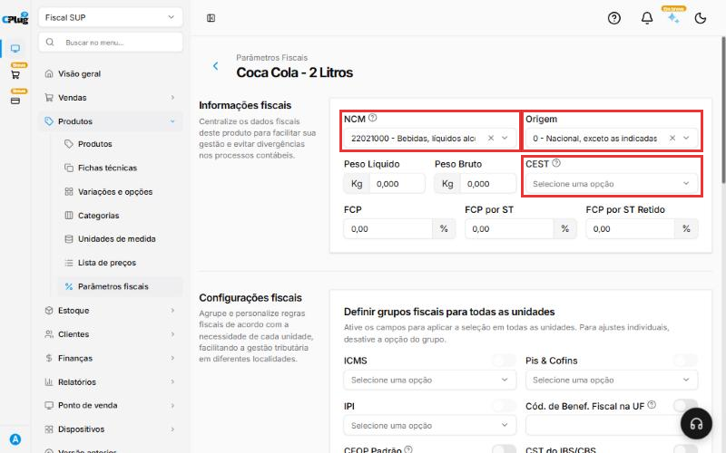
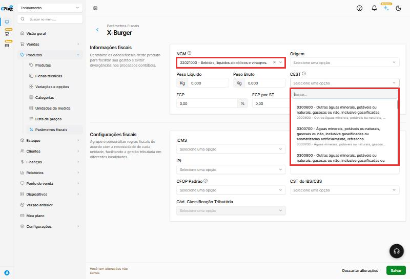
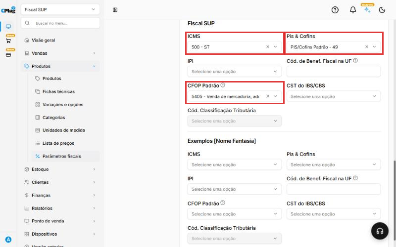
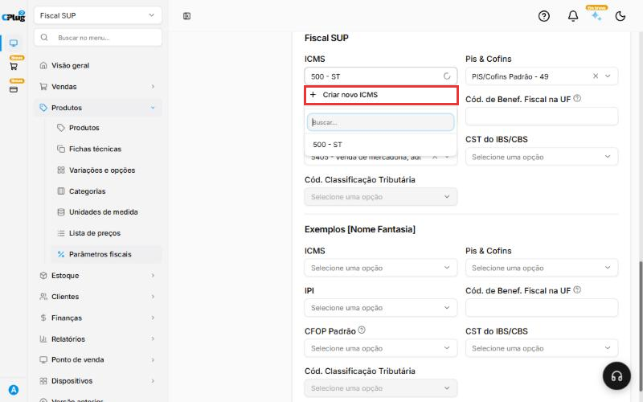
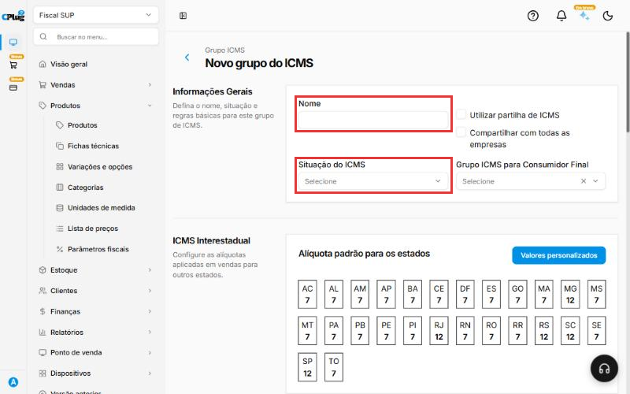
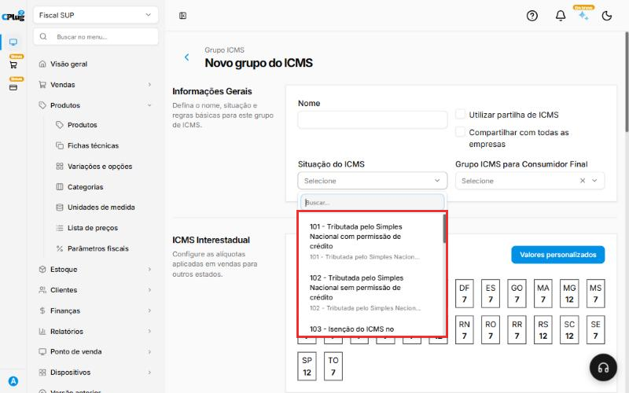
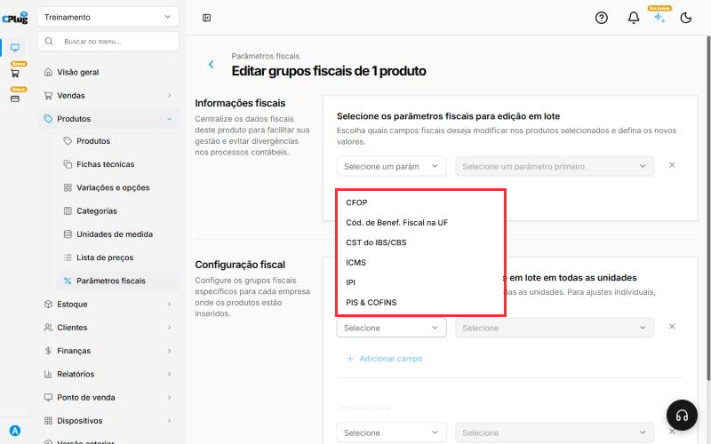

Como configurar os dados fiscais de um produto
Todo produto vendido com nota fiscal (o cupom do caixa, NFC-e, ou a NF-e) precisa dos dados fiscais preenchidos. Sem eles, o produto até aparece no caixa, mas a nota é recusada pela Sefaz ou nem chega a ser emitida.
Esta é uma das principais causas de nota recusada. Vale a pena entender o conceito antes de preencher.
Quem define os códigos fiscais é o seu contador
Este manual mostra onde e como preencher. Quais códigos usar (NCM, CFOP, situação do ICMS, PIS/COFINS) depende do produto, do estado e do regime da sua empresa, e quem decide é o contador.
Antes de começar, peça ao contador uma lista com, para cada produto: NCM, CEST (se tiver), Origem, ICMS, PIS/COFINS e CFOP.
Entenda o conceito
Quando você vende com nota, o sistema monta a nota fiscal juntando três fontes de informação:
- Os dados da sua empresa: CNPJ, endereço e regime tributário (Simples Nacional ou regime normal).
- Os dados do produto: o que ele é (NCM), de onde vem (Origem) e se tem substituição tributária (CEST). Ficam em Informações fiscais.
- As regras de imposto: como o ICMS, o PIS/COFINS e o IPI aparecem na nota, e o tipo de operação (CFOP). Ficam em Configurações fiscais.
A Sefaz confere tudo isso. Se um código estiver faltando ou não combinar com o outro, a nota é recusada.
O que é um grupo fiscal
O ICMS, o PIS/COFINS e o IPI não são preenchidos produto por produto. Você cria um grupo fiscal, que guarda a regra do imposto, e escolhe esse grupo em cada produto.
Exemplo: o contador diz que quase todos os seus produtos usam o ICMS "102". Você cria um grupo chamado "Simples Nacional - 102" e escolhe esse grupo em todos esses produtos. Os refrigerantes, que têm substituição tributária, usam outro grupo, por exemplo "Bebidas com ST - 500".
É como uma etiqueta: o grupo diz "este produto segue a regra X". Por isso, cuidado ao alterar um grupo que já está em uso: confirme com o contador antes.
O que é cada campo
Os exemplos abaixo são só para você reconhecer os códigos. Não copie sem confirmar com o contador.
| Campo | O que é, em palavras simples | Exemplo comum |
|---|---|---|
| NCM | Código de 8 números que diz o que o produto é. É o mesmo em todo o Brasil. Define a tributação e a classificação do produto. | Refrigerante: 2202.10.00 |
| CEST | Código que identifica produtos com substituição tributária (ST). Só abre depois de escolher o NCM, e a lista mostra os CESTs ligados àquele NCM. Nem todo produto tem. | Depende do produto |
| Origem | De onde vem a mercadoria: nacional (códigos 0, 3, 4, 5 e 8) ou estrangeira (1, 2, 6 e 7). | 0 - Nacional |
| Peso líquido e Peso bruto | O peso do produto, em quilos. | Preencha se o contador pedir |
| FCP | Fundo de Combate à Pobreza: um adicional do ICMS cobrado em alguns estados e produtos. Há também o FCP por ST e o FCP por ST retido. | Em geral, 0,00 |
| ICMS | Grupo que diz como o ICMS aparece na nota. No Simples Nacional, os códigos têm 3 números (CSOSN); no regime normal, 2 números (CST). | 102 - Simples Nacional sem permissão de crédito |
| Pis & Cofins | Grupo que diz como o PIS e a COFINS aparecem na nota. | Definido pelo contador |
| IPI | Imposto de indústria. A maioria do comércio e da alimentação não usa. | Em geral, fica vazio |
| Cód. de Benef. Fiscal na UF | Código de benefício fiscal do seu estado. Tem 8 caracteres: a sigla do estado e mais 6 (exemplo do sistema: SP123456). | Só se o contador informar |
| CFOP Padrão | O tipo de operação da venda. | 5101 · 5102 · 5405 (veja abaixo) |
| CST do IBS/CBS e Cód. Classificação Tributária | Campos novos da reforma tributária. A classificação só abre depois de escolher o CST, e as opções dependem dele. | Preencha quando o contador orientar |
Entendendo o CFOP de venda
O CFOP diz que tipo de venda está acontecendo. Os três mais comuns no comércio e na alimentação:
- 5101 - Venda de produção do estabelecimento: o produto é feito por você, como o X-Burger preparado na cozinha.
- 5102 - Venda de mercadoria adquirida de terceiros: o produto é comprado pronto e revendido, como um chocolate.
- 5405 - Venda de mercadoria com substituição tributária: revenda de produto em que o imposto já foi recolhido antes, na compra, como acontece com muitos refrigerantes.
Na NFC-e (cupom do caixa) só valem alguns CFOPs
Segundo o próprio sistema, a NFC-e aceita apenas os CFOPs 5101, 5102, 5103, 5104, 5115, 5405, 5656, 5667 e 5933. A lista do sistema também mostra o 5910 (bonificação, doação ou brinde) e o 5949 (outras saídas). Eles não servem para a NFC-e: use só com orientação do contador, em NF-e.
Nos prints, o quadrado vermelho mostra onde você deve clicar ou digitar.
Abra a tela de parâmetros fiscais
No menu do lado esquerdo, clique em Produtos e depois em Parâmetros fiscais.
A lista mostra todos os produtos e a situação de cada imposto: Definido (já configurado) ou Pendente (falta configurar). Todo produto com Pendente em ICMS, PIS & COFINS ou CFOP pode dar problema na nota.
Para achar o que falta, clique no funil (Filtrar). Em Grupos fiscais, escolha Pendentes no ICMS, no Pis & Cofins ou no IPI e clique em Aplicar filtros. A lista mostra só os produtos que ainda precisam de atenção.

Abra o produto
No fim da linha do produto, clique no ícone de ajustes (o desenho de três tracinhos com bolinhas). Se não aparecer, role a tabela para a direita.
Para encontrar um produto mais rápido, digite o nome na caixa de busca, no topo, ou escolha a categoria em Filtrar por categoria.
Preencha as informações fiscais do produto
Na parte Informações fiscais:
- NCM: clique, digite o código ou parte do nome (ex.: "bebidas" ou "2202") e escolha a opção certa na lista.
- Origem: escolha de onde vem o produto. Na maioria dos casos, 0 - Nacional.
- CEST: preencha só se o contador informar. O campo fica cinza até você escolher o NCM; depois, mostra só os CESTs que combinam com aquele NCM.
Peso líquido, Peso bruto e os campos de FCP só precisam ser preenchidos se o contador pedir.


Escolha os grupos fiscais da sua loja
Role a tela até a parte Configurações fiscais e escolha:
- ICMS: o grupo de ICMS que o contador indicou.
- Pis & Cofins: o grupo de PIS e COFINS.
- CFOP Padrão: o tipo de operação, por exemplo 5101, 5102 ou 5405.
- IPI: só se a sua empresa usar.
- Cód. de Benef. Fiscal na UF, CST do IBS/CBS e Cód. Classificação Tributária: só com orientação do contador. A classificação fica cinza até você escolher o CST do IBS/CBS.
Se a empresa tem mais de uma loja (filial), a tela mostra uma seção com o nome de cada loja. Escolha os grupos na seção da sua loja.

Tem várias lojas com as mesmas regras?
Com mais de uma loja, aparece no topo de Configurações fiscais o quadro Definir grupos fiscais para todas as unidades. Ligue a chave ao lado do campo (por exemplo, ICMS) e escolha o grupo uma vez só: ele vale para todas as lojas. Desligue a chave quando uma loja precisar de um grupo diferente, por exemplo, uma loja em outro estado.
Se o grupo ainda não existe, crie
Se a sua empresa ainda não tem grupos, as listas de ICMS, Pis & Cofins e IPI aparecem vazias, com a mensagem "Nenhum resultado encontrado". É preciso criar os grupos uma primeira vez.
-
Clique na caixa do imposto (por exemplo, ICMS). No topo da lista, clique em + Criar novo ICMS.

-
Em Nome, use um nome fácil de reconhecer, que diga a regra. Exemplo: "Simples Nacional - 102" ou "Bebidas com ST - 500".
-
Em Situação do ICMS, escolha o código que o contador indicou.


-
As alíquotas por estado (ICMS interestadual, ICMS padrão, FCP e ICMS ST) já vêm preenchidas. Só altere com orientação do contador.
- Clique em Salvar. O grupo novo passa a aparecer na lista do produto.
O mesmo vale para Pis & Cofins e IPI: clique na caixa e use a opção + Criar novo, no topo da lista.
Clique em "Salvar"
Depois de preencher tudo, clique no botão verde Salvar, no canto de baixo, à direita. Para sair sem gravar, clique em Descartar alterações.
Como saber que deu certo
Volte para Produtos → Parâmetros fiscais. O produto passa a mostrar Definido nas colunas que você preencheu. Faça uma venda de teste com nota e confira se ela é autorizada.
Configurar vários produtos de uma vez
Se vários produtos usam os mesmos códigos (por exemplo, todos os refrigerantes), não precisa abrir um por um:
- Na lista de Parâmetros fiscais, marque a caixinha do lado esquerdo de cada produto. Dica: filtre pela categoria antes, e marque todos de uma vez.
- No rodapé, clique em Edição em lote.
- Em Informações fiscais, clique em Adicionar campo, escolha o campo (por exemplo, NCM) e o valor.
- Em Configuração fiscal, clique em Adicionar campo, escolha o grupo (por exemplo, ICMS) e a opção.
- Clique em Salvar. Todos os produtos marcados recebem os mesmos dados.

Boas práticas
- Comece pela planilha do contador. Peça uma lista com os dados fiscais de cada produto, ou de cada categoria. Com ela em mãos, o trabalho é só copiar.
- Crie os grupos primeiro, depois os produtos. Com os grupos prontos, preencher cada produto leva poucos segundos, e a Edição em lote resolve categorias inteiras.
- Dê nomes que expliquem a regra. "Simples Nacional - 102" diz tudo; "Grupo 1" não diz nada e confunde quem vem depois.
- Produto novo já nasce com fiscal. Sempre que cadastrar um produto, abra os parâmetros fiscais dele no mesmo dia. Assim ele nunca vai para o caixa com "Pendente".
- Confira os pendentes toda semana. Use o filtro Pendentes para ver o que ficou para trás.
- Teste antes de vender. Depois de configurar um tipo novo de produto, faça uma venda de teste com nota e confira se foi autorizada.
- Mudou de regime ou de contador? Peça uma revisão dos grupos fiscais. Uma regra antiga num grupo afeta todos os produtos que usam esse grupo.
Deu algum problema?
A nota foi recusada por causa do NCM
O NCM precisa ter 8 números e existir na tabela oficial. Confira o código com o contador, corrija no produto e emita a nota de novo.
A nota foi recusada por causa do CFOP
Confira se o CFOP do produto é um dos aceitos na NFC-e: 5101, 5102, 5103, 5104, 5115, 5405, 5656, 5667 ou 5933. O 5910 e o 5949, por exemplo, não são aceitos no cupom do caixa.
O campo CEST está cinza e não abre
Escolha primeiro o NCM. O CEST só abre depois, e mostra apenas os códigos ligados ao NCM escolhido. Se a lista vier vazia, o NCM não tem CEST.
O campo Cód. Classificação Tributária está cinza
Escolha primeiro o CST do IBS/CBS. A classificação depende dele.
A lista de grupos (ICMS, Pis & Cofins) está vazia
Ainda não existe nenhum grupo para a sua loja. Crie o grupo pela opção + Criar novo, no topo da lista, como no passo 5, com os dados que o contador passou.
Salvei, mas o produto continua \"Pendente\"
Confira se você preencheu a seção da loja certa. Cada loja tem a própria seção em Configurações fiscais. Confira também se escolheu um grupo em cada imposto que aparece como Pendente.
Tenho lojas em estados diferentes
As regras podem mudar de um estado para outro. Desligue a opção Definir grupos fiscais para todas as unidades para esse imposto e escolha o grupo certo na seção de cada loja.
Não sei qual código usar
Quem define é o contador da sua empresa. O suporte da CPlug ajuda a encontrar onde preencher no sistema, mas não define a tributação dos produtos.
Relacionados: Como cadastrar um produto · Como cadastrar um cliente
fiscal tributação imposto ncm cest cfop cst csosn icms pis cofins ipi origem nota fiscal nfc-e nf-e rejeição recusada sefaz parâmetros fiscais grupo fiscal ibs cbs reforma tributária substituição tributária st fcp fundo de combate à pobreza benefício fiscal classificação tributária 5101 5102 5405 pendente definido edição em lote